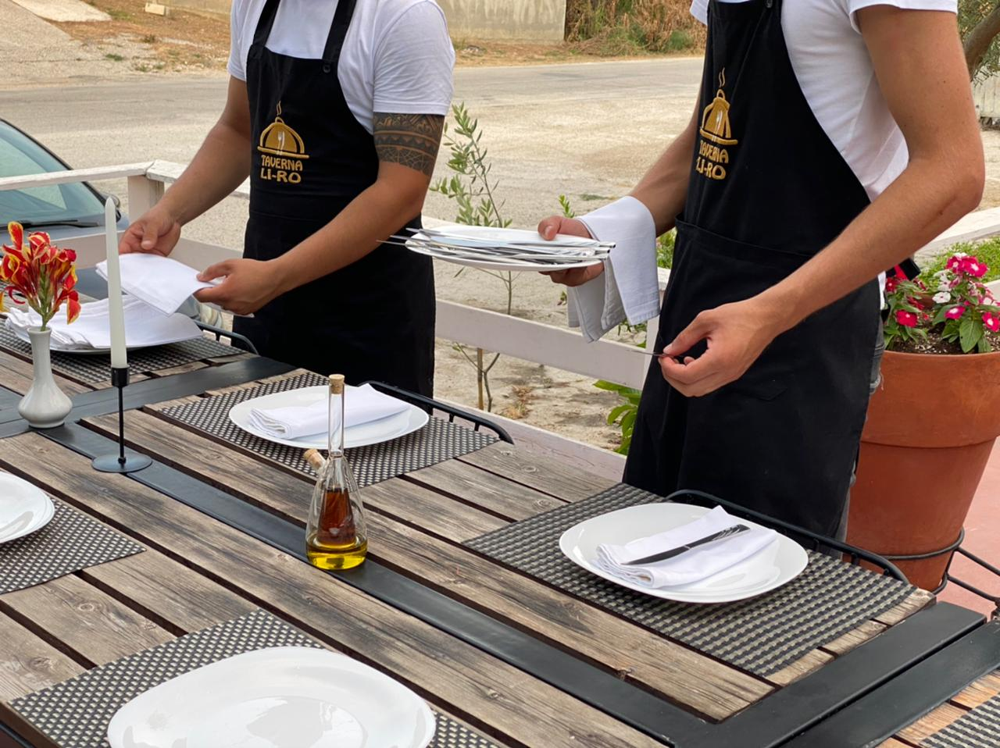
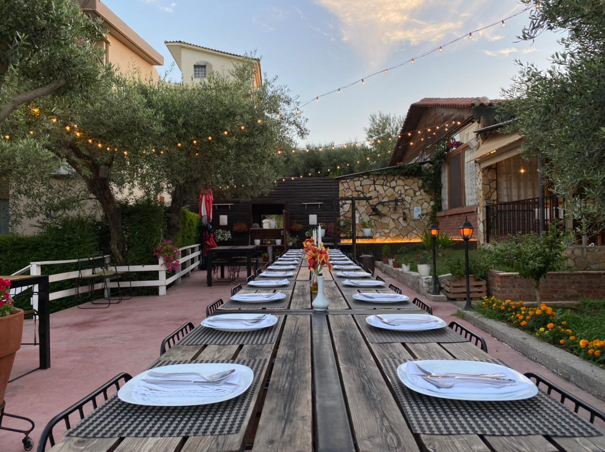

Rreth Tavernes

Taverna është hapur në gusht të vitit 2008.
Ideja e hapjes lindi nga dashamirë të verës dhe vajit ekstra të virgjër të familjes Metaj.
Që presj hapjes prioritet është ngrohtësia që i ofrohet secilit klient për tu ndier si në shtëpinë e tyre.
Cilësia e ushqimit të thjeshtë, tradicional dhe të shijshëm ofrohet çdo ditë tashmë prej dy brezash nga familja Metaj.
Ju Mirëpresim!
Sado e thjeshtë, një pjatë e gatuar me dashuri shijon pa fund!
Gatuar me produkte të freskëta çdo ditë!

